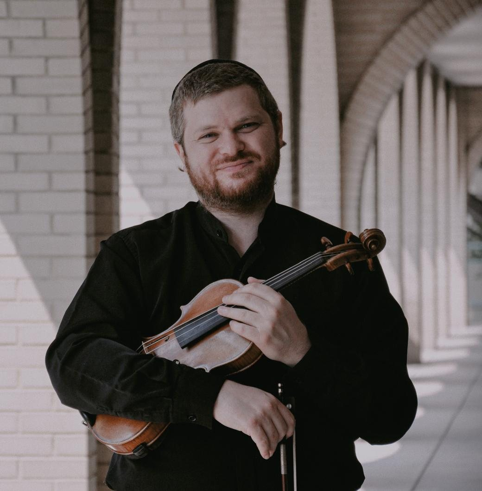

You're invited
Live onlinePlay the violin or viola with greater ease
The problem
Maybe your bow hold tightens when a passage speeds up. Maybe your fingers feel stiff, your shoulders creep upward, or your jaw holds on without you noticing. Maybe practice leaves you more tired than it should.
And somewhere along the way, someone told you to relax.
But nobody explained what that means while you're holding a bow, stopping a string, and trying to make music at the same time. What should stay active? What should let go? And how do you tell the difference?
The reframe
Ease means using the right amount of effort at the right moment, and releasing it when it's no longer needed.
Playing the violin or viola requires real physical effort. The question is how much, and when.
Relaxation isn't the goal in itself. It's a tool that lets you move freely, respond to the instrument, and play what you actually hear.
How it works
This isn't a lecture. You'll work through guided exercises with the bow hold, the fingers, and simple strokes like martelé, all designed so you can try them on your own instrument in real time.
You'll leave with a clearer sense of what your playing actually requires, and a practical way to keep exploring it in your own practice.
Who it's for
You don't need to be advanced. You just need to be curious about how you play.
Playing with ease doesn't mean playing without strength. It means strength you can use and release at will.
About the instructor

DMA, Peabody Conservatory
Dr. Yonatan Grinberg is a violinist, chamber musician, and educator based in Baltimore. He holds a Doctor of Musical Arts from the Peabody Conservatory and has performed internationally as a soloist and chamber musician.
He has studied with some of the world’s great violin masters, including Itzhak Perlman, Vadim Gluzman, and Shmuel Ashkenazi. Through his teaching and coaching programs, he helps musicians develop greater technical freedom, expressive playing, and confidence in performance.
“I believe players deserve more than ‘relax.’ They deserve a clear way to discover how much effort their playing needs, and how to use it on purpose.”
Yonatan Grinberg
Frequently asked questions
Yes, completely free.
No. The exercises work at any level, as long as you're comfortable holding the instrument and bow.
Absolutely. Everything applies to both the violin and the viola.
Yes. Have it tuned and nearby, because you'll try the exercises as we go.
Live online via Zoom. You'll get your join link as soon as you register, and again by email.
Yes. The replay will be shared as soon as it’s ready, and it comes to you by email.
This masterclass focuses on how you use effort while playing. It isn't medical advice or treatment, so if you're experiencing pain, please consult a qualified health professional.
Join Dr. Yonatan Grinberg live on Tuesday, October 20.
Reserve My Free PlaceFree · Live online · Bring your instrument
Registration confirmed
Your place is reserved for Tuesday, October 20, 8–9 PM ET.
Your join link
From Tension to Freedom
Tuesday, October 20 · 8–9 PM ET · Zoom
If the button doesn't work, paste this into your browser:
https://us06web.zoom.us/j/82676383558?pwd=RkT96O5WybBPT6ja9pYDIoV9VnnRcy.1
Bookmark this page. Your join link lives here, ready for October 20.
Frequently asked questions
Yes. Have it tuned and nearby, because you'll try the exercises as we go.
Live online via Zoom. Your join link is right above, and it's also in your inbox. There's a waiting room, so join a few minutes early and you'll be let in.
No. The exercises work at any level, as long as you're comfortable holding the instrument and bow.
Absolutely. Everything applies to both the violin and the viola.
Yes. The replay will be shared as soon as it’s ready — it’ll arrive in your inbox, no need to ask.
This masterclass focuses on how you use effort while playing. It isn't medical advice or treatment, so if you're experiencing pain, please consult a qualified health professional.
Still have a question? Email chamberencounters@gmail.com and we'll get back to you before the class.